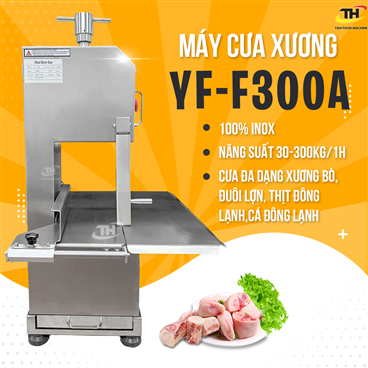
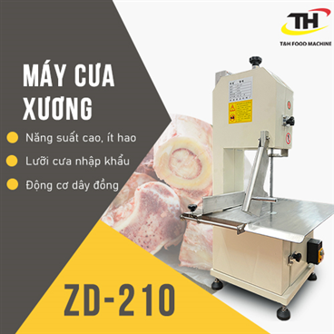
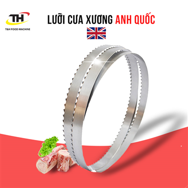

Máy Cưa Xương T&H: Hiệu Quả -
An Toàn - Tiết Kiệm Cho Nhà Bếp
Máy cưa xương là thiết bị nhà bếp hiện đại, giúp người dùng
cắt xương nhanh chóng, dễ dàng và an toàn hơn so với phương
pháp thủ công. Sự xuất hiện của máy cưa xương đã giúp tiết
kiệm sức lao động, thời gian, nâng cao hiệu suất công việc
trong các bếp ăn công nghiệp, nhà hàng, khách sạn và cả căn
bếp gia đình. Bài viết này sẽ cung cấp thông tin chi tiết về
máy cưa xương, từ lợi ích, phân loại, tiêu chí chọn mua,
hướng dẫn sử dụng đến những mẹo giúp bạn vận hành máy an
toàn và hiệu quả.
Tại sao nên sử dụng máy cưa xương?
Chất lượng vượt trội
Sử dụng máy cưa xương mang lại nhiều lợi ích thiết thực cho người
dùng, biến công việc chế biến thực phẩm trở nên đơn giản và hiệu quả
hơn.
Tiết kiệm thời gian và công sức so với
phương pháp thủ công
Máy cưa xương giảm thiểu đáng kể thời gian và công sức so
với việc dùng dao chặt thủ công. Tốc độ cưa nhanh chóng của máy giúp
bạn xử lý khối lượng lớn xương trong thời gian ngắn, đặc biệt hữu
ích trong các bếp ăn công nghiệp.
Cắt xương chính xác, đẹp mắt, không làm
nát thịt
Lưỡi cưa sắc bén kết hợp với khả năng điều chỉnh độ dày lát
cắt đảm bảo đường cắt xương chính xác, đẹp mắt, không
bị vụn nát, đồng thời giữ nguyên hình dạng miếng thịt,
nâng cao tính thẩm mỹ cho món ăn.
Đảm bảo vệ sinh an toàn thực phẩm
Máy cưa xương được làm từ chất liệu inox cao cấp, dễ
dàng vệ sinh, hạn chế tối đa vi khuẩn bám dính, đảm bảo
vệ sinh an toàn thực phẩm.
Tăng năng suất, giảm chi phí nhân công
Sử dụng máy cưa xương nâng cao năng suất lao động,
giảm sự phụ thuộc vào nhân công, từ đó tiết kiệm chi phí nhân sự cho
doanh nghiệp.
Giúp chế biến được nhiều món ăn ngon từ
xương
Máy cưa xương mở ra khả năng chế biến đa dạng các món
ăn từ xương như canh, hầm, nước dùng... với hương vị
thơm ngon, bổ dưỡng.
Các loại máy cưa xương phổ biến trên thị
trường
Trên thị trường hiện nay có 3 loại máy cưa xương chính, mỗi loại có
ưu điểm, nhược điểm và ứng dụng riêng.
Máy cưa xương công nghiệp để bàn
Ưu điểm:
Công suất lớn, hiệu suất cao: Thích hợp sử
dụng trong các bếp ăn công nghiệp, nhà hàng, khách sạn...
Độ bền cao: Được chế tạo từ vật liệu chắc
chắn, chịu được cường độ hoạt động lớn.
Nhiều tính năng hiện đại: Trang bị băng
tải, hệ thống làm mát, tăng hiệu quả sử dụng.
Nhược điểm:
Kích thước cồng kềnh: Chiếm nhiều diện
tích, không phù hợp với không gian bếp nhỏ.
Giá thành cao.
Ứng dụng: Chuyên dùng để cưa xương ống, xương
lớn, khối lượng nhiều.

Máy cưa xương dải
Ưu điểm:
Cắt được nhiều loại xương: Xương ống, xương
sườn, xương cá...
Đường cắt chính xác, thẩm mỹ: Giúp tạo
hình cho miếng thịt đẹp mắt.
Dễ vệ sinh.
Nhược điểm:
Công suất thấp hơn máy cưa xương bàn.
Không phù hợp để cắt xương đông lạnh.
Ứng dụng: Phù hợp với nhà hàng, quán ăn quy
mô vừa và nhỏ, các cửa hàng thực phẩm.

Máy cưa xương mini
Ưu điểm:
Kích thước nhỏ gọn, dễ di chuyển: Phù hợp
với mọi không gian bếp.
Giá thành rẻ.
Dễ sử dụng.
Nhược điểm:
Công suất thấp, chỉ phù hợp cắt xương nhỏ, khối lượng
ít.
Độ bền không cao bằng máy cưa xương bàn và máy cưa xương
dải.
Ứng dụng: Sử dụng trong gia đình hoặc các
quán ăn nhỏ lẻ.
Công suất lớn, độ bền cao, nhiều tính năng hiện đại
6.800.000 VNĐ
5
Máy cưa xương GoodFor HL1500
Máy cưa xương dải
1.5 kW
Cắt được xương đông lạnh, độ ồn thấp
7.000.000 VNĐ
Tiêu chí chọn mua máy cưa xương phù hợp
Để lựa chọn được chiếc máy cưa xương phù hợp với nhu cầu sử dụng,
bạn cần lưu ý một số tiêu chí sau:
Công suất và hiệu suất
Công suất: Lựa chọn công suất phù hợp với
nhu cầu sử dụng. Nhu cầu sử dụng càng lớn, bạn cần chọn máy có
công suất càng cao.
Hiệu suất: Nên chọn máy có hiệu suất hoạt
động cao, giúp tiết kiệm điện năng.
Chất liệu lưỡi cưa và thân máy (inox 304)
Lưỡi cưa: Nên chọn lưỡi cưa làm từ thép
không gỉ, độ cứng cao, sắc bén, đảm bảo độ bền và hiệu quả cắt.
Thân máy: Ưu tiên chất liệu inox 304 chống
gỉ sét, dễ vệ sinh, đảm bảo an toàn vệ sinh thực phẩm.

Kích thước và trọng lượng
Kích thước: Phụ thuộc vào không gian bếp
và nhu cầu sử dụng.
Trọng lượng: Cân nhắc đến khả năng di
chuyển, lắp đặt máy.
Tính năng an toàn (nút dừng khẩn cấp, bảo
vệ quá tải)
Nên chọn máy được trang bị đầy đủ tính năng an toàn như:
Nút dừng khẩn cấp: Ngắt nguồn điện tức thì
khi xảy ra sự cố.
Bảo vệ quá tải: Tự động ngắt khi hoạt động
quá công suất, tránh cháy nổ.
Thương hiệu uy tín
Lựa chọn sản phẩm từ các thương hiệu uy tín như Điện
Máy Bếp Việt, Máy Thực Phẩm T&H... để đảm bảo chất
lượng sản phẩm, chế độ bảo hành, dịch vụ hậu mãi tốt.
Giá cả
Cân nhắc ngân sách và so sánh giá cả giữa các nhà cung cấp để lựa
chọn sản phẩm phù hợp nhất.
Hướng dẫn sử dụng và bảo quản máy cưa
xương
Các bước chuẩn bị trước khi sử dụng
Kiểm tra nguồn điện: Đảm bảo nguồn điện ổn
định, phù hợp với điện áp của máy.
Lắp đặt lưỡi cưa: Lắp đặt lưỡi cưa đúng
cách, chắc chắn.
Kiểm tra các bộ phận: Đảm bảo các bộ phận
của máy hoạt động tốt, không bị hư hỏng.
Quy trình cưa xương an toàn và hiệu quả
Đeo găng tay bảo hộ: Tránh bị thương do
tiếp xúc trực tiếp với xương.
Cầm chắc tay cầm: Giữ máy cưa cố định,
tránh bị rung lắc trong quá trình sử dụng.
Điều chỉnh tốc độ cưa: Phù hợp với từng
loại xương và độ dày lát cắt.
Không để máy hoạt động liên tục quá lâu: Tránh
làm nóng máy, giảm tuổi thọ.
Rút nguồn điện trước khi vệ sinh: Đảm bảo
an toàn.
Vệ sinh lưỡi cưa: Sử dụng bàn chải chuyên
dụng để làm sạch vụn xương bám trên lưỡi cưa.
Lau chùi thân máy: Dùng khăn ẩm lau sạch
các vết bẩn trên thân máy.
Tra dầu mỡ định kỳ: Giúp máy hoạt động
trơn tru, bền bỉ.
Mẹo sử dụng máy cưa xương hiệu quả
Chọn lưỡi cưa phù hợp với từng loại xương
Lưỡi cưa mỏng: Dùng để cưa xương nhỏ,
xương cá.
Lưỡi cưa dày: Dùng để cưa xương lớn, xương
ống.
Điều chỉnh tốc độ cưa phù hợp
Tốc độ chậm: Dùng để cưa xương cứng, xương
đông lạnh.
Tốc độ nhanh: Dùng để cưa xương mềm, xương
nhỏ.
Kỹ thuật cưa xương an toàn và hiệu quả
Cưa từ từ, không nên ấn mạnh: Tránh làm
gãy lưỡi cưa hoặc gây nguy hiểm.
Cắt xương theo thớ: Giúp đường cắt đẹp
mắt, hạn chế bị vụn nát.
Cách xử lý khi lưỡi cưa bị kẹt
Ngắt nguồn điện ngay lập tức.
Kiểm tra nguyên nhân: Xương quá cứng, lưỡi
cưa bị mẻ...
Khắc phục: Thay thế lưỡi cưa mới hoặc xử
lý xương.
Các câu hỏi thường gặp (FAQ):
Có nên mua máy cưa xương cũ không?
Không nên mua máy cưa xương cũ vì:
Chất lượng khó đảm bảo: Máy có thể bị hư
hỏng, xuống cấp.
Không được bảo hành: Gây khó khăn khi máy
gặp sự cố.
Lưỡi cưa xương có cần thay thường xuyên không?
Tần suất thay lưỡi cưa phụ thuộc vào:
Tần suất sử dụng.
Chất liệu lưỡi cưa.
Cách bảo quản.
Nên kiểm tra lưỡi cưa thường xuyên và thay thế khi có dấu hiệu bị
mòn, gãy, cùn...
Làm thế nào để vệ sinh máy cưa xương?
Vệ sinh máy cưa xương sau mỗi lần sử dụng:
Rút nguồn điện, tháo rời các bộ phận.
Vệ sinh lưỡi cưa, thân máy bằng bàn chải, khăn ẩm.
Lau khô và lắp ráp lại máy.
Có thể cưa được tất cả các loại xương bằng máy cưa xương
không?
Hầu hết các loại máy cưa xương đều có thể cưa được các loại xương
thông dụng. Tuy nhiên, bạn nên tìm hiểu kỹ thông số kỹ thuật của máy
để biết được khả năng cưa xương cụ thể.
Kết luận
Máy cưa xương là thiết bị hữu ích, mang lại nhiều lợi ích thiết
thực cho người sử dụng. Hy vọng qua bài viết này, bạn đã có thêm
thông tin bổ ích về máy cưa xương và lựa chọn được sản phẩm phù hợp
cho nhu cầu sử dụng của mình.